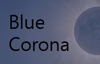

<!-- 무료 테스트 페이지 -->
<!-- 체크리스트와, 점수에 따라 사용자의 상태를 알려주는 페이지 -->

<HTML:5>
    <!DOCTYPE html>
    <html lang="en">
    <head>
        <meta charset="UTF-8">
        <meta http-equiv="X-UA-Compatible" content="IE=edge">
        <meta name="viewport" content="width=device-width, initial-scale=1.0">
        <title> Free Service </title>
        <style>
            body{
                background:#FFD966;
                color:#041C3A;
            }
            #tit{ /*  페이지 제목 스타일 */
                margin-top:5%;
                font-size: 380%;
                text-align:center;
                font-weight:bold;
                font-style:italic;
                text-shadow: 5px 5px 10px brown;
            }
            #checklist{ /* 체크리스트를 담을 틀 (내부에 체크리스트 폼과 제출 버튼 있음)의 스타일 */
                overflow: auto; /* 필요하면 스크롤러 만들기 */
                width: 40%; height:60%;
                border:solid 4px #041C3A;
                float: left; /* 페이지의 왼쪽에 배치 */
                margin-left: 6.5%;
                margin-top: 5%;
                border-radius : 20px 20px;
            }
            #checkTit{ /* 체크리스트 제목의 스타일 */
                margin-top: 5%;
                font-size: 250%;
                text-align:center;
                font-weight: bolder;
            }
            #result{ /* 결과를 보여주는 틀의 스타일 */
                width: 40%; height:60%;
                border:solid 4px #041C3A;
                background: #041C3A;
                float: right; /* 페이지의 오른쪽에 배치 */
                margin-right:6.5%;
                margin-top: 5%;
                color:#FFD966;
                text-align:center;
                border-radius : 20px 20px;
            }
            form{ /* 체크리스트 담는 폼의 스타일 */
                width:85%;
                margin:auto;
                margin-top:5.5%;
                margin-bottom:5%;
            }
            span{ /*span들의 스타일*/
                font-size: 150%;
                font-weight:bolder;
            }
            ol li{ /* 리스트 행들의 스타일 */
                font-weight: bolder;
                list-style-type:decimal;
            }
            ol li:hover{ /* 리스트의 각 행에 마우스 올라가면 적용될 스타일 (배경색 바뀜)*/
                background-color: lightseagreen;
            }
            label{ /* 각 질문에 대한 선택지 한 줄에 배정 */
                display:inline-block;
            }
            label:hover{ /* 선택지에 마우스 올라가면 적용될 스타일 (글자색, 스타일 바뀜)*/
                font-style: italic;
                color: red;
            }
            hr{ /* 줄 스타일 */
                height:1px;
                background-color: #041C3A;
                border-color: #041C3A;
                color:#041C3A;
                margin-bottom:10%;
                margin-top: 10%;
            }
            #submit{ /* 체크리스트 폼 제출 버튼 스타일 */
                width:40%;
                margin-left:30%; margin-bottom:5%;
                background:#041C3A;
                padding: 10px;
                font-size: 150%;
                font-weight: bolder;
                color:#FFD966;
                border-radius : 20px 20px;
                border:solid 5px #041C3A;
            }
            #submit:hover{ /* 체크리스트 폼 제출 버튼에 마우스 올라오면 적용되는 스타일 (배경색 바뀜)*/
                background:firebrick; 
            }
            @keyframes showResult{ /* 결과 나올 때 적용되는 애니메이션 (점점 크게) */
                from{
                    margin-right:25%; margin-top: 15%;
                    width:0%; height: 0%;
                }
                to {
                    margin-right:6%; margin-top: 5%;
                    width:40%; height:60%;
                }
            }
            @keyframes showGage{ /* 결과 화면 속 사용자의 점수 게이지에 적용될 애니메이션 (사용자의 점수만큼 차오름) */
                from{
                    width:0%;
                }
                to {
                }
            }
            #printLogo { /* 인쇄 시 반영되는 회사 로고의 스타일 */
                display : none;
                position : absolute; left : 85%; top : 80%;
                width : 100%; height : 100%;
            }
            #goChoice{ /* 테스트 선택 페이지로 가는 링크의 스타일 */
                background-color: #041C3A;
                position:fixed;
                top:9%; right: 7%;
                text-decoration: none; /* 링크 밑줄 없애주기 */
                color: #FFD966;
                padding:5px; padding-top:7px;
                border-radius: 10px 10px;
            }
            #goChoice:hover{ /* 테스트 선택 페이지로 가는 링크에 마우스 올라가면 적용될 스타일 */
               box-shadow: 5px 5px 0px dodgerblue;
            }
            #goChoice div{ /* 테스트 선택 페이지로 가는 링크에 버튼 같은 삼각형 만들어주기 */
               margin:auto;
               width: 0px;height: 0px;
               border-top:30px solid transparent;
               border-bottom:30px solid transparent;
               border-left: 40px solid none;
               border-right: 40px solid #FFD966;
            }
            
        </style>
        <script>
            var score = 0; //사용자의 점수
            var alertNum = 0;// 선택되지 않은 항목이 있을 때 뜨는 알람이 한번만 뜨게 하기 위한 변수
            
            function init(){ // 체크리스트 제출 받으면 실행되는 함수
                // 각 질문들을 받는 변수들
                var Q1 = document.getElementsByName("q1");
                var Q2 = document.getElementsByName("q2");
                var Q3 = document.getElementsByName("q3");
                var Q4 = document.getElementsByName("q4");
                var Q5 = document.getElementsByName("q5");
                var Q6 = document.getElementsByName("q6");
                var Q7 = document.getElementsByName("q7");
                var Q8 = document.getElementsByName("q8");
                var Q9 = document.getElementsByName("q9");
                
                // 각 질문들이 어떤 라벨에 체크했는지 확인 후 해당 라벨의 점수를 저장하는 변수
                var Score1 = calScore(Q1);
                var Score2 = calScore(Q2);
                var Score3 = calScore(Q3);
                var Score4 = calScore(Q4);
                var Score5 = calScore(Q5);
                var Score6 = calScore(Q6);
                var Score7 = calScore(Q7);
                var Score8 = calScore(Q8);
                var Score9 = calScore(Q9);
                
                // 총 점수 계산
                score = Score1 + Score2 + Score3 + Score4 + Score5 + Score6 + Score7 + Score8 + Score9;

                resultImage(); // 결과 보여주기
            }

            function calScore(Qn){ // Qn에서 어떤 라벨에 체크했는지 확인 후 해당 라벨의 점수를 반환하는 함수
                this.Qn = Qn; //Qn 받아오기
                var Score = null; // 해당 라벨의 점수를 저장할 변수
                
                for(var i=0; i< this.Qn.length; i++){ // 라벨을 돌아가며 체크
                    if(this.Qn[i].checked == true){ // 만약 해당 선택지가 선택되어있다면
                        Score = i; //Score에 해당 라벨에 부여되어 있는 점수 저장
                        break; //for문 정지
                    }
                }

                if(Score == null){ //만약 해당 질문에 답하지 않았다면 (해당 질문에 어떤 라벨도 답하지 않아 Score가 null 일 떄)
                    if(alertNum == 0){ //이미 한 번 알람 떴다면 알람 다시 하지 않음
                        alert("There is a Question you don't answer.");
                        alertNum += 1; //알람 다시 안 뜨게 값 바꿔주기
                    }
                }

                return Score; //점수 반환
            }

            function resultImage(){ // 결과 화면 보여주는 함수
                var result = document.getElementById("result"); //id가 result인 곳 (결과 담는 틀)
                var point = document.getElementById("point"); //id가 point인 곳 (점수 보이게 될 곳)
                var state = document.getElementById("state"); //id가 state인 곳 (상태 이름 보이게 될 곳)
                var gage = document.getElementById("gage"); //id가 gage인 곳 (gageValue를 담는 틀)
                var gageValue = document.getElementById("gageValue"); //id가 gageValue인 곳 (점수 게이지)

                point.style.fontSize = "200%";
                point.innerHTML = "Score : " + score + "/27"; // 사용자의 점수 출력
                point.style.marginBottom = "5%";

                gage.style.width = "80%"; gage.style.height = "3%"; //gage 틀 만들어주기
                gage.style.margin = "auto";
                gage.style.border = "solid 1px #FFD966";
                
                gageValue.style.width = 100/27*score+"%"; //만점 27점을 100%로 환산했을 떄 사용자의 점수의 %를 계산해 gageValue의 넓이로 지정
                gageValue.style.height = "100%";
                gageValue.style.backgroundColor = "#FFD966";
                
                // 각 %에 따른 상태를 보여주는 박스들
                var s1 = document.getElementById("s1");
                var s2 = document.getElementById("s2");
                var s3 = document.getElementById("s3");
                var s4 = document.getElementById("s4");

                s1.style.width = "18.5%"; s1.style.height = "3%"; // 0~4점 => 0% ~ 18.5%
                s2.style.width = "18.5%"; s2.style.height = "3%"; // 5~9점 => 18.5% ~ 37%
                s3.style.width = "37%"; s3.style.height = "3%"; // 10~19점 => 37% ~ 74%
                s4.style.width = "26%"; s4.style.height = "3%"; // 20~27점 => 74% ~ 100%
                
                // 각 박스들의 색
                s1.style.backgroundColor = "skyblue";
                s2.style.backgroundColor = "royalblue";
                s3.style.backgroundColor = "darkblue";
                s4.style.backgroundColor = "midnightblue";
                
                // 상태 이름 넣어주기
                s1.innerHTML = "No matter (0~4)";
                s2.innerHTML = "Light Blue (5~9)";
                s3.innerHTML = "Normal Blue (10~19)";
                s4.innerHTML = "Severe Blue (20~)";
                
                // 사용자의 상태의 이름을 보여줄 박스
                state.style.fontSize = "400%";
                state.style.marginTop = "9%";
                state.style.fontWeight = "bold";
                state.style.padding = "10px";
                state.style.borderRadius = "20px 20px";

                if(score>=20){ //20점 이상이면 심각한 우울증
                    result.style.background = "url('심각한우울증.png') no-repeat"; // 심각한 우울증 용 배경
                    state.innerHTML = "Severe Depression"; // 상태 이름 출력
                }
                else if(score >= 10){
                    result.style.background = "url('중간정도우울증.png') no-repeat"; // 보통 정도의 우울증 용 배경
                    state.innerHTML = "Normal Depression"; // 상태 이름 출력
                }
                else if(score >= 5){
                    result.style.background = "url('약한우울증.png') no-repeat"; // 약한 우울증 용 배경
                    state.style.backgroundColor = "saddlebrown";
                    state.innerHTML = "Light Depression"; // 상태 이름 출력
                    state.style.paddingBottom = "20px";
                }
                else{
                    result.style.background = "url('우울증아님.png') no-repeat"; // 우울증 없음 용 용 배경
                    state.style.backgroundColor = "#FFD966";
                    state.style.color = "midnightblue";
                    state.innerHTML = "Almost 100% happy!"; // 상태 이름 출력
                    state.style.paddingBottom = "20px";
                }
                result.style.backgroundSize = "cover";

                if(alertNum > 0){ // 만약 답변하지 않은 상태로 결과가 도출됐다면 상태 말하지 않고 경고 메세지 출력
                    state.style.fontSize = "250%";
                    state.style.backgroundColor = "maroon";
                    state.style.color = "#FFD966";
                    state.innerHTML = "Please check again that all questions were answered.";
                }
                
                // 결과 화면에 애니메이션 적용 (점점 커지게)
                result.style.animationDuration = "3s";
                result.style.animationName = "showResult";
                result.style.animationIterationCount = "1"; // 한번만 반복
                
                // 사용자 점수 게이지 애니메이션 적용 (점점 차오르게)
                gageValue.style.animationDuration = "6s";
                gageValue.style.animationName = "showGage";
                gageValue.style.animationIterationCount = "1"; // 한번만 반복
            }
            
            // 인쇄할 때만 사이트 로고 바탕에 적용하는 함수들
            window.onbeforeprint=function (e) { // 인쇄 미리보기/인쇄 할 때
                var printLogo = document.getElementById("printLogo");
                printLogo.style.display = "block"; // 로고가 화면에 나타나게 함
                logoDiv.style.zIndex = -1; // 맨 뒤에 위치
            }
            
            window.onafterprint=hideLogo; //인쇄 미리보기 아닐 떄
            function hideLogo() {
                printLogo = document.getElementById("printLogo");
                printLogo.style.display = "none"; // printLogo 부분이 영역이 보이지 않게 함
                printLogo.style.zIndex = -1; // 맨 뒤에 위치
                }
        </script>
    </head>
    <body>
        <div id="tit"> <!-- 페이지 제목  -->
            Self-Diagnosis
        </div>
        
        <div id="checklist"> <!-- 체크리스트 폼과 제출 버튼 담는 틀 -->
            <div id="checkTit">Let's Check<br> <!-- 체크리스트 제목 -->
                <span style="font-size:27%;">** This test is based on depression checklist of Korea Centers for Diseas Control and preventation **</span></div> 
                <!-- 체크리스트에 대한 간략한 설명 -->
            
            <form> <!-- 체크리스트 담는 폼 -->
            <ol> <!-- 질문들과 선택지를 담을 순서있는 리스트 -->
                <!-- 질문1 -->
                <li><span> I didn't feel interested or enjoyed working or<br> leisure activities.<br><br></span>
                    <!-- 선택지들 -->
                    <label><input type="radio" name="q1" value="A0"> NO </label>
                    <label><input type="radio" name="q1" value="A1"> 2~6 dyas </label>
                    <label><input type="radio" name="q1" value="A2"> 7~12 days </label>
                    <label><input type="radio" name="q1" value="A3"> Almost Everyday </label>
                    <hr>
                </li>
                <!-- 질문2 -->
                <li>
                    <span> I felt down, depressed, or hopeless.<br><br></span>
                    <!-- 선택지들 -->
                    <label><input type="radio" name="q2" value="A0"> NO </label>
                    <label><input type="radio" name="q2" value="A1"> 2~6 dyas </label>
                    <label><input type="radio" name="q2" value="A2"> 7~12 days </label>
                    <label><input type="radio" name="q2" value="A3"> Almost Everyday </label>
                    <hr>
                </li>
               <!-- 질문3 -->
                <li>
                    <span> It's hard to fall asleep / I woke up often.<br> / I slept too much.<br><br></span>
                    <!-- 선택지들 -->
                    <label><input type="radio" name="q3" value="A0"> NO </label>
                    <label><input type="radio" name="q3" value="A1"> 2~6 dyas </label>
                    <label><input type="radio" name="q3" value="A2"> 7~12 days </label>
                    <label><input type="radio" name="q3" value="A3"> Almost Everyday </label>
                    <hr>
                </li>
                <!-- 질문4 -->   
                <li>
                    <span> I was tired or had little energy.<br><br></span>
                    <!-- 선택지들 -->
                    <label><input type="radio" name="q4" value="A0"> NO </label>
                    <label><input type="radio" name="q4" value="A1"> 2~6 dyas </label>
                    <label><input type="radio" name="q4" value="A2"> 7~12 days </label>
                    <label><input type="radio" name="q4" value="A3"> Almost Everyday </label>
                    <hr>
                </li>
                <!-- 질문5 -->
                <li>
                    <span> I didn't have an appetite. / I ate too much.<br><br></span>
                    <!-- 선택지들 -->
                    <label><input type="radio" name="q5" value="A0"> NO </label>
                    <label><input type="radio" name="q5" value="A1"> 2~6 dyas </label>
                    <label><input type="radio" name="q5" value="A2"> 7~12 days </label>
                    <label><input type="radio" name="q5" value="A3"> Almost Everyday </label>
                    <hr>
                </li>
                <!-- 질문6 -->
                <li>
                    <span> I thought I was negative or a failure.<br> I disappointed myself and my family.<br><br></span>
                    <!-- 선택지들 -->
                    <label><input type="radio" name="q6" value="A0"> NO </label>
                    <label><input type="radio" name="q6" value="A1"> 2~6 dyas </label>
                    <label><input type="radio" name="q6" value="A2"> 7~12 days </label>
                    <label><input type="radio" name="q6" value="A3"> Almost Everyday </label>
                    <hr>
                </li>
                <!-- 질문7 -->
                <li>
                    <span> I couldn't focus on my daily life, such as reading newspapers or watching TV.<br><br></span>
                    <!-- 선택지들 -->
                    <label><input type="radio" name="q7" value="A0"> NO </label>
                    <label><input type="radio" name="q7" value="A1"> 2~6 dyas </label>
                    <label><input type="radio" name="q7" value="A2"> 7~12 days </label>
                    <label><input type="radio" name="q7" value="A3"> Almost Everyday </label>
                    <hr>
               </li>
                <!-- 질문8 -->
               <li>
                    <span> I move too slowly or I speak.<br> / I was so nervous or excited.<br><br></span>
                   <!-- 선택지들 -->
                    <label><input type="radio" name="q8" value="A0"> NO </label>
                    <label><input type="radio" name="q8" value="A1"> 2~6 dyas </label>
                    <label><input type="radio" name="q8" value="A2"> 7~12 days </label>
                    <label><input type="radio" name="q8" value="A3"> Almost Everyday </label>
                    <hr>
               </li>
                <!-- 질문9 -->
               <li>
                    <span> I thought it'd be better to die.<br> / I thought I'd hurt myself somehow.<br><br></span>
                   <!-- 선택지들 -->
                    <label><input type="radio" name="q9" value="A0"> NO </label>
                    <label><input type="radio" name="q9" value="A1"> 2~6 dyas </label>
                    <label><input type="radio" name="q9" value="A2"> 7~12 days </label>
                    <label><input type="radio" name="q9" value="A3"> Almost Everyday </label>
                    <hr>
               </li>
            </ol>
                
            <input id="submit" type="button" value="submit" onclick="init()"> <!-- 제출 버튼 -->
            </form>
        </div>
        
        <div id="result"> <!-- 결과 화면 -->
            
                <!-- 제출 전에는 "Result"라고 보여주고 / 제출 후에는 점수 보여줄 부분 -->
                <div id="point" style="margin-top:7%; font-size: 400%; font-weight:bolder;">&nbsp;&nbsp;Result&nbsp;&nbsp;</div>
            
                <!-- 사용자 점수의 게이지 보여줄 부분-->
                <div id="gage">
                    <div id="gageValue"></div>
                </div>
            
               <!-- % 별 상태이름을 알려주는 박스들 -->
                <div style="width:80%; margin:auto;">
                    <div id="s1" style="display:inline-block; margin-left:-1.5%; text-align:center; font-size:5px; color:navy;"></div>
                    <div id="s2" style="display:inline-block; margin-left:-1.5%; text-align:center; font-size:5px;  color:navy;"></div>
                    <div id="s3" style="display:inline-block; margin-left:-1.5%; text-align:center; font-size:5px; color:deepskyblue;"></div>
                    <div id="s4" style="display:inline-block; margin-left:-1.5%; text-align:center; font-size:5px; color:deepskyblue;"></div>
                </div>
            
               <!-- 사용자의 상태 이름을 보여주는 부분  -->
                <div id="state" style="width:60%; margin:auto;font-size:1500%;">?</div>
        </div>


        <div id="printLogo"> <!-- 프린트 시 보일 로고를 담는 부분 -->
            
        </div>
        
        <a id="goChoice" href="테스트선택.html"> <!-- 테스트 선택 페이지로 가는 링크 -->
            <div></div> <!-- 버튼 같은 삼각형 자리 -->
            Choice Page
        </a>
    </body>
    </html>
</HTML:5>
